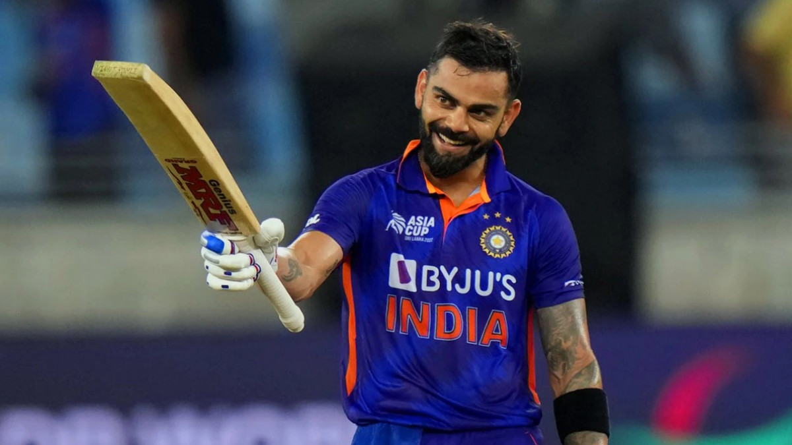

Here we can see three cricket players image , Here following images of Sachin Tendulkar, Virat kohli , Rohit Sharma,
there are three Indian cricket Player But Very famous in world cricket with our Hard work and incredible performance.
Here we show the performance and Career of following cricket players:-

Sachin Tendulkar
Sachin Tendulkar born 24 April 1973 (age 51)Bombay, Maharashtra, India
(now Mumbai, India)
He is an Indian former international cricketer who captained the Indian national team.the greatest batsmen in the history of cricket.he is the all-time highest run-scorer in both ODI and Test cricket with more than 18,000 runs and 15,000 runs, respectively.
Made his Test match debut on 15 November 1989 against Pakistan in Karachi at the age of sixteen,
Career statistics
| Competition |
Test |
ODI |
FC |
| matches |
200 |
463 |
310 |
| Runs scored |
15,921 |
18,426 |
25,396 |
| Bat.average |
53.78 |
44.83 |
57.84 |
| 100s/50s |
51/68 |
49/96 |
81/116 |
| Top score |
248* |
200* |
248* |

Virat Kohli
Virat Kohli born 5 November 1988 (age 35)
Delhi,
India is an Indian international cricketer who plays Test and ODI cricket for the Indian national team. A former captain in all formats of the game, Kohli retired from the T20I format following India's win at the 2024 T20 World Cup. He holds the highest IPL run-scorer record, ranks third in T20I, third in ODI, and stands the fourth-highest in international cricket.
h3 He is the first player to score 20,000 runs in a decade. In 2020, the International Cricket Council named him the male cricketer of the decade.
Career statistics
| Competition |
Test |
ODI |
T20 |
| 113 |
295 |
125 |
| Runs scored |
8,848 |
13,906 |
4188 |
| Bat.average |
49.15 |
58.18 |
48.7 |
| 100s/50s |
29/30 |
50/72 |
1/38 |
| Top score |
254* |
183 |
122* |

Rohit Sharma
Rohit Gurunath Sharma born 30 April 1987 (age 37)
Nagpur, Maharashtra,
India is an Indian international cricketer captains the India national cricket team in Test and One Day International (ODI) matches. most runs in T20 Internationals, most sixes in international cricket,[a] most double centuries in ODI cricket (3), most centuries at Cricket World Cups (7) and joint most hundreds in Twenty20 Internationals (5). He is the first player to score 5 T20I centuries.[8] He also holds the world record for the highest individual score (264) in (ODI).
Career statistics
| Competition |
Test |
ODI |
T20 |
| Matches |
59 |
262 |
159 |
| Runs scored |
4,137 |
10,709 |
4231 |
| Bat.average |
45.46 |
49.12 |
31.34 |
| 100s/50s |
12/17 |
31/55 |
5/32 |
| Top score |
212 |
264 |
121 |